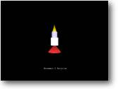

2. Movimento e Rotação Objetivo: Mover um objeto no
espaço 3D |
 |
Vamos começar a fazer coisas se moverem! Neste tutorial
nós estaremos carregando um objeto que eu fiz em 3D Studio. Garanto que
ele não é maravilhoso e se parece mais com uma vela que um foguete,
mas irá servir.
Vamos dar uma olhada no código-fonte. Sinta-se livre para rodá-lo!
NOTA: Você precisará ter o objeto ROCKET.3DS no mesmo diretório
do arquivo fonte para o Blitz encontrá-lo.
Você pode mover o foguete com a seta PARA CIMA, e girá-lo com ESQUERDA
e DIREITA.
| Graphics3D 800,600 SetBuffer BackBuffer() camera=CreateCamera() CameraViewport camera,0,0,800,600 light=CreateLight() rocket=LoadMesh( "rocket.3ds" ) PositionEntity rocket,0,0,7 While Not KeyHit(1) If KeyDown(200) Then MoveEntity rocket,0,0.05,0 EndIf If KeyDown(203) Then TurnEntity rocket,0,0,1.0 EndIf If KeyDown(205) Then TurnEntity rocket,0,0,-1.0 EndIf UpdateWorld RenderWorld Text 320,500,"Movimento e Rotação" Flip Wend End |
Eu não explicarei todas as linhas de código, só os comandos novos que nós ainda não usamos. O primeiro é:
| rocket=LoadMesh("rocket.3ds") |
Como você provavelmente pode adivinhar, esta linha de
código carregará um modelo 3D chamado ROCKET.3DS em uma variável
chamada 'rocket'.
O que é essa variável? É exatamente o mesmo tipo de rótulo
que nós usamos em Blitz para inicializar sprites. (Ele guarda o endereço
de memória onde os dados são armazenados) Neste caso ela aponta
para o local onde o modelo é armazenado.
|
If KeyDown(200) Then MoveEntity rocket,0,0.05,0 EndIf |
Estas 3 linhas nos falam que se você está apertando
PARA CIMA, o objeto 'ROCKET' se move no eixo Y 0.05 unidades acima.
Vamos dar uma olhada mais profunda nisso. Se lembre que meu foguete está
apontando para cima - assim para começar eu quero que meu foguete viaje
para cima - por isso eu estou aumentando a coordenada Y. (se lembre que em 3D
um Y positivo quer dizer para cima - não abaixo como em sistemas de coordenada
normais, como coordenadas de sprites no Blitz2D)
Se meu foguete fosse um carro que foi projetado para estar voltado para a direita,
então eu quereria que meu carro viajasse à direita da tela - assim
eu estaria aumentando a coordenada X. É muito importante observar isso
no começo de seu programa, ou seu objeto poderia começar se movendo
para a direção errada.
|
If KeyDown(203) Then
If KeyDown(205) Then |
Deveria ser bastante óbvio a você que estas linhas
controlam a rotação de nosso foguete. Se você aperta a seta
ESQUERDA - gira o foguete 1.0 unidade (no sentido horário), ao passo
que apertando a seta DIREITA resulta em girar -1.0 (anti-horário).
Assim como o objeto ainda move para frente embora nós já não
estejamos apontando para cima? .. bem.. você tem que agradecer Mr Sibly
por nos dar o comando TurnEntity! Perceba que quando giramos o objeto, o eixo
move junto. Se nós girarmos o objeto 90 graus, o eixo de Y está
apontando agora onde o eixo de X deveria estar. Não preocupe em 'por
que' ou 'como'.. só seja grato você não tem que trabalhar
com sórdidos cálculos para fazer isto.
Caso você esteja desejando saber, você pode girar o objeto sem que
o eixo se mova usando o comando RotateEntity. Isto seria usado principalmente
para colocação de objetos em seu mundo - por exemplo, se eu projetasse
o foguete em seu lado. Eu o giraria primeiramente até ele estar voltado
para cima com o comando RotateEntity - então eu poderia usar o TurnEntity
para movê-lo.
O único modo de entender totalmente este comando, (que provavelmente
será seu comando mais usado) é experimentar. Tente fazer o foguete
girar em outras direções!!
Se lembre que este é o formato que você usa:
| TurnEntity [objeto],[quantidade a girar no eixo X],[quantidade a girar no eixo Y],[quantidade a girar no eixo Z] |
NOTA: O Blitz3D também contém um comando para escalar um objeto, (veja o manual para mais onformações sobre o comando ScaleEntity) - se, por exemplo, nós projetássemos o objeto muito pequeno nós poderíamos aumentá-lo em tempo real, ou encolhê-lo se estivesse muito grande. Se você escolher usar uma multidão de diferentes programas 3D para projetar seus objetos, então você precisará usar muito este comando. O 3D Studio por exemplo, gosta de escalar seu objeto maior que outros programas.